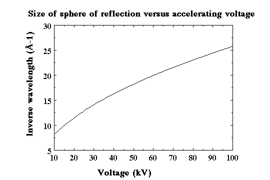
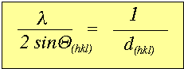
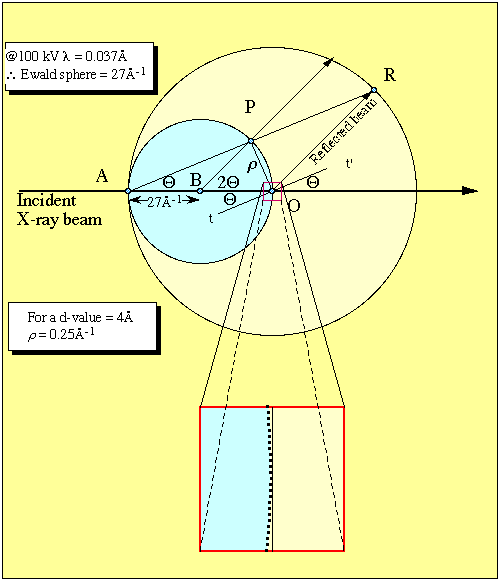
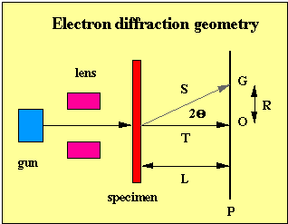
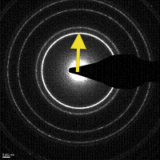
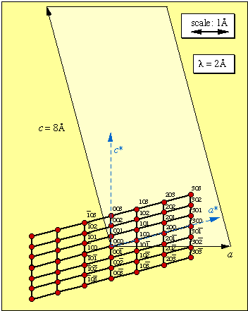
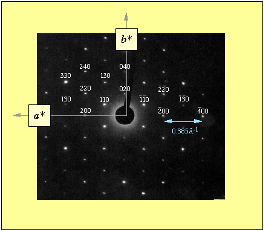

Reading:
Güven, N. (1990) Electron diffraction of clay mineral.
In Electron-Optical methods in clay science Vol. 2, (ed.
I. D. R. Mackinnon and F. A. Mumpton), The Clay Minerals Society,
Boulder, CO. 41-68.
In reciprocal space, the size of the reflection sphere or Ewald sphere is related to the wavelength of radiation. Recall that the wavelength (λ) of electrons is proportional to the accelerating potential.
Previously, we let the constant k equal unity. In fact, k is related to the radius of the Ewald sphere. This figure below shows a plot of Ewald size (in reciprocal Å or Å-1) as a function of voltage.

Elastically scattered electrons from a thin crystallite with interplaner spacings hkl give rise to diffracted beams defined by Bragg's law.

Recall that this relationship can be represented vectorially with the components of the incident beam, diffracted beam (for a particular hkl) and the reciprocal lattice projection on the Ewald sphere (sphere of reflection).

We have previously shown that
Combining Bragg's law yields athe length of the reciprocal vector,
As shown graphically in the figure above, The wavelength of electrons accelerated through a voltage of 100 kV is 0.037Å. This gives an Ewald sphere radius of 27Å-1.
Typical interplaner d-values are about 4Å, which produces a reciprocal lattice vector of 0.25Å-1.
Thus, to a first approximation, the first plane section through the reciprocal lattice is nearly normal to the incident wave vector.
The length of the reciprocal lattice vector for any particular hkl plane can be given as,

From the above figure is the following geometric relationships can be seen that
Recall Bragg's law,
for small values of Θ,
therefore,
Since
then,
The vector R is therefore, a direct measure of the reciprocal lattice vector (ρ) .
λL is the camera constant.
This is typically determined by using a known material such as gold.
Gold sputtering equipment is commonly found in electron microscopy labs
(to enhance sample conductivity). Gold coating deposit a thin layer of
randomly oriented crystals, which results in powder-like diffraction
pattern. Instead of discreet diffraction from a single crystal to
specific locations on the Ewald sphere, a set of powder rings develop.
Gold is isometric, therefore the {hkl}
are of the same form. This gives a few strong set of lines with known
indices and d-spacings. The distance from the center of the photo
below (collected at a known magnification and kV) to the first line is
1/2.3469 Å-1 or 0.4261 Å-1.
Gold
a = 4.0650 Å SPACE GROUP: Fm3m
2.3469 1 1 1
2.0325 2 0 0
1.4372 2 2 0
1.2256 3 1 1
1.1735
2
2 2

The diagram below contains an orthogonal view of a monoclinic lattice with lattice parameters: a = 3 Å, b = 4 Å, c = 8 Å and b = 105°. The view contains the a and c axes on the paper/screen plane and the common b* and b axis is perpendicular to paper/screen plane. The scale is set to 1Å = 2 cm.
The reciprocal lattice points for the first view (i.e., the ac face) over the range of reiprocal indices +/- 303 are plotted. The a* and c* axes are also labeled. The distance from the origin to the reciprocal lattice point are be proportional to λ, where

The figure below is adapted from Güven, N. (1990). The pattern is from a muscovite crystal oriented perpendiular to the real a axis and b axis. With calibration, the camera constant, λL can be determined. Commonly a TEM grid is gold coated. The length (radius) of gold diffraction rings serve as an external calibration. Obviously, the pattern must be properly indexed in order to proceed.
In the image below, if the distance from the origin to a diffraction spot is measured in mm, then the λL = 72.9 mm per Å-1. Note: Your image size may appear at a different scale.
For example,
If the distance from the origin to the 200 spot is 28 mm, then ρ(200) = 0.385 Å-1.
This translate to a d(200) = 2.60Å
Therefore,
a = 5.19Å
With TEM and electron diffraction don't expect to get resolution much better than +/- 0.01Å

{kind=link}